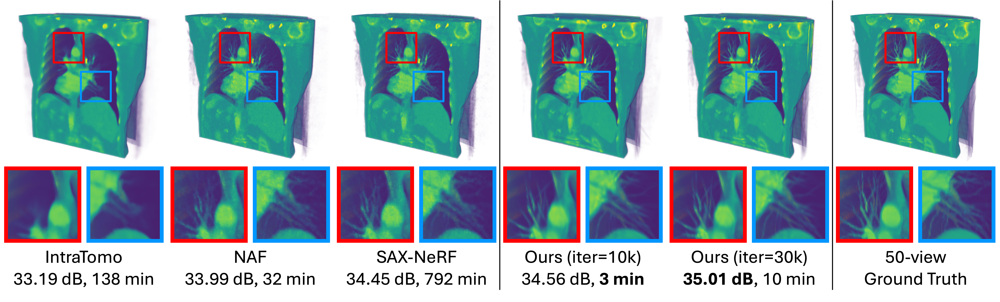

A 3DGS-based framework for fast and direct CT reconstruction.
3D Gaussian splatting (3DGS) has shown promising results in image rendering and surface reconstruction. However, its potential in volumetric reconstruction tasks, such as X-ray computed tomography, remains under-explored. This paper introduces R2-Gaussian, the first 3DGS-based framework for sparse-view tomographic reconstruction. By carefully deriving X-ray rasterization functions, we discover a previously unknown integration bias in the standard 3DGS formulation, which hampers accurate volume retrieval. To address this issue, we propose a novel rectification technique via refactoring the projection from 3D to 2D Gaussians. Our new method presents three key innovations: (1) introducing tailored Gaussian kernels, (2) extending rasterization to X-ray imaging, and (3) developing a CUDA-based differentiable voxelizer. Experiments on synthetic and real-world datasets demonstrate that our method outperforms state-of-the-art approaches in accuracy and efficiency. Crucially, it delivers high-quality results in 4 minutes, which is 12x faster than NeRF-based methods and on par with traditional algorithms.
@inproceedings{r2_gaussian,
title={R$^2$-Gaussian: Rectifying Radiative Gaussian Splatting for Tomographic Reconstruction},
author={Ruyi Zha and Tao Jun Lin and Yuanhao Cai and Jiwen Cao and Yanhao Zhang and Hongdong Li},
booktitle = {Advances in Neural Information Processing Systems (NeurIPS)},
year={2024}
}